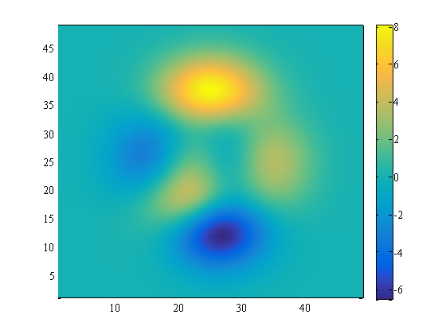
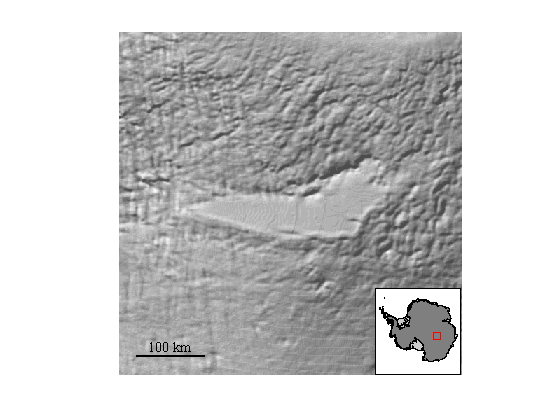

clickz documentation
This function temporarily prints z values corresponding to clicked points on a surface or image. If multiple surfaces or images exist in the same axes, clickz first looks for surfaces and determines the one on the top of the graphical stack is the relevant one. If no surfaces exist, but an image or multiple images exist, clickz probes the image on the top of the graphical stack.
To find "z" values of an existing image or pcolor plot, simply type clickz and start clicking on areas of interest. Instead of clicking, you may also hit any key on the keyboard except the keys listed below which perform the following functions:
- Carriage return terminates data entry.
- + or z zooms in, centered on current cursor location.
- - or x zooms out, centered on current cursor location.
Above I put "z" in quotation marks for a reason. This function does not actually return plotted z values, but it probes the color data of surfaces and images and assumes color corresponds to z values. This is often true, but not always. For example, you may have some x,y,z data plotted as a surface and you're letting cdata represent some other variable. Accordingly, this function is probably best used with 2D pcolor or image plots, although it can sometimes be used with 3D surface plots.
Some gridded datasets do not play nicely with 2D interpolation. In such cases z is returned as the nearest neighbor.
Contents
Syntax
clickz clickz(N) clickz(...,ax) clickz(...,'keep') clickz(,...'TextProperty',TextValue) z = clickz(...) [x,y,z] = clickz(...) [x,y,z,h] = clickz(...)
Description
clickz temporarily prints a z value on a plot at each click location. Previous printed values are deleted with each new click. clickz continues to run until user hits Return on the keyboard.
clickz(N) performs clickz N times or until the user hits Return on the keyboard. If N is specified with 'keep' and/or text formatting, N must be the first input argument.
clickz(...,ax) specifies an axis handle ax on which to use clickz.
clickz(...,'keep') does not delete printed points.
clickz(,...'TextProperty',TextValue) formats printed text. Multiple text properties and values may be specified, including fontsize, color, background, etc.
z = clickz(...) returns an array of clicked z values.
[x,y,z] = clickz(...) returns clicked x, y, and z values.
[x,y,z,h] = clickz(...) also returns text object handle h when the 'keep' command is used and all four outputs are requested by the user.
Example 1: General Matlab Example
Suppose you have this plot:
pcolor(peaks);
colorbar
shading interp
 Simply type clickz to click around on the gridded data for z values and hit Enter when you're satisfied. Here I'll click 4 times:
clickz
ans =
0.10
-2.59
7.81
3.31
To retain the z values printed on the figure after hitting Enter, include the 'keep' option. You can also format the text.
clickz('color','blue','fontweight','bold','keep');
To return arrays of clicked x,y,z values, tell clickz that you want data like this. Note, these values won't match the ones printed on the image above because I'm calling clickz again.
[x,y,z] = clickz
x =
8.73
9.48
21.29
23.18
27.58
y =
13.14
9.91
18.61
12.44
8.37
z =
0.07
0.07
3.35
-4.52
-4.24
Example 2: Antarctic map with Matlab's Mapping Toolbox:
Quick check: What's the surface elevation around the center of Lake Vostok? Below we'll plot surface elevations, but set the colormap to pure white and apply topograpic relief shading to highlight the extents of Lake Vostok.
figure mapzoom('lake vostok','inset') bedmap2('surfw','colorbar','off') colormap([1 1 1]) shadem(-15,[225 30]) scalebar
The clickz function makes it easy to get surface elevations. Here I'm using the 'keep' option so you can see where I click.
clickz('keep')
ans =
3496.83
3522.89
We can tell from the relief shading that Lake Vostok is pretty flat, and clickz confirms it doesn't vary much in surface elevation from one end to the other.
Author Info
This function and supporting documentation were written by Chad A. Greene of the University of Texas at Austin's Institute for Geophysics (UTIG), December 2014. The clickz function includes John D'Errico's inpaint_nans function.